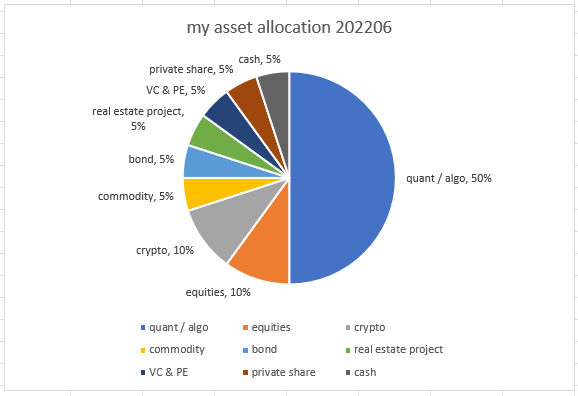
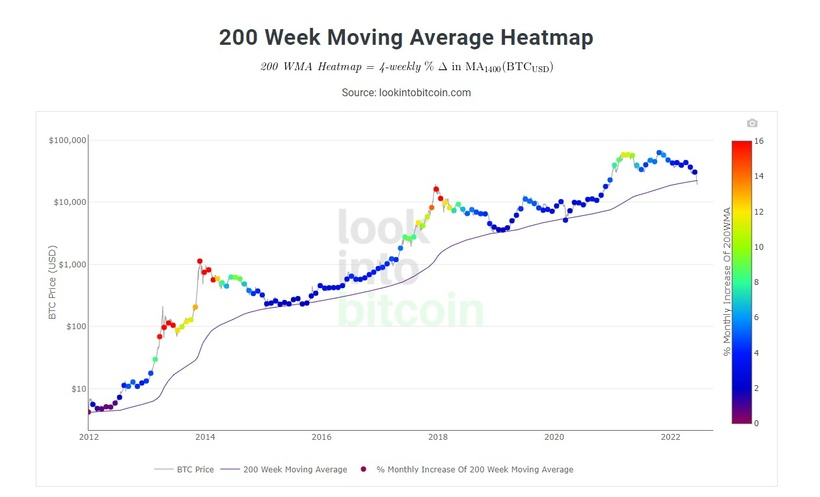
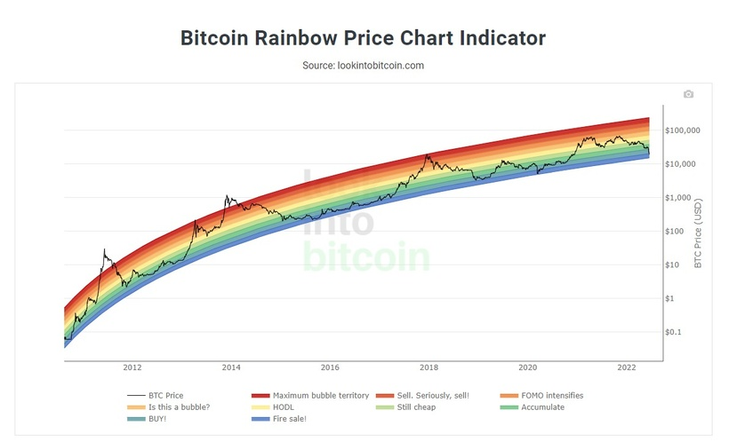
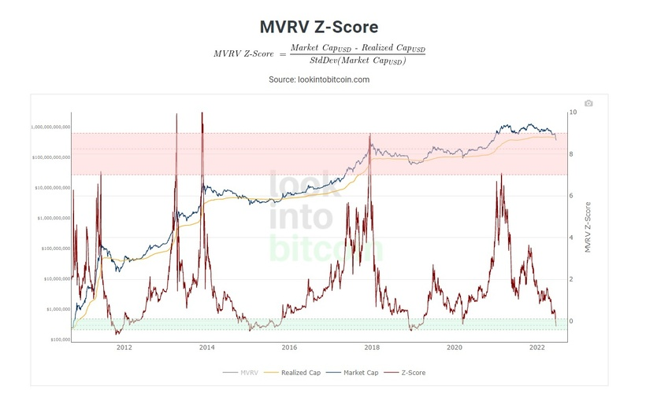
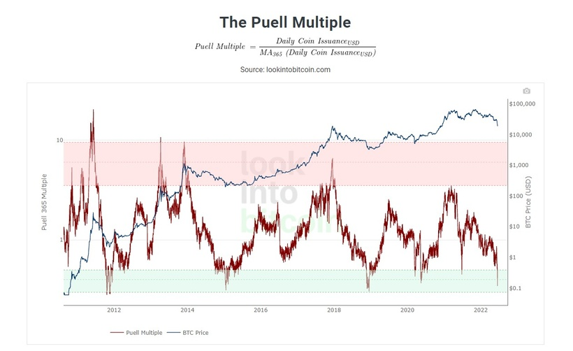

幣市出現幣災，近一個月由30000美元插至17600美元左右，哀鴻遍野、血流成河。這次專欄就以問答探討一下各種問題。
1. 為甚麼幣市會大跌？
比特幣價格每段下跌都有其原因，首先是收水導致美股下跌，而因為加密貨幣與美股相關性於今年提高了不少，由去年的0.3相關性系數提高至0.7-0.8，因此市場上的trading firm都把bitcoin價格與美股走勢掛鉤地進行correlation trade（即每次美股跌的比crypto多，便買美股沽crypto），這個收水因素令bitcoin由高位拉低至30000美元水平。然後，因為不少資金都在cefi及defi進行了槓桿，所以價格下跌令不少投資者的倉位被斬倉，令stETH與ETH價格出現unpeg。
由於有大量機構持有stETH及ETH，例如最大加密貨幣借貸平台Celsius，繼而出現流動性風險所以被逼暫停提款及轉帳，令市場更為恐慌，把bitcoin價格推低至20000中的水平。再來有crypto大戶三箭資本（3AC）的爆倉，把bitcoin推低至20000美元。因此，整個下跌是由高槓桿的連鎖效應導致。
2. 有方法預視嗎？
經常提及的未平倉合約除市值比率（oi/market cap ratio）就在5月開始出現警號。這數字去年平均值為1.5-1.6%，而我在過往專欄不斷提及1.8%是警戒水平，每次這數字升至1.8%便會有爆邊情況。有趣是，這比率於5月已經升至2%，在本月更抽升至高達2.3%的水平，非常恐怖。
而Estimated leverage ratio（即oi除exchange reserve）同樣不斷創新高，與oi/market cap比率一起向大家發出訊號。這顯示不止Defi世界高槓桿，Cefi世界的槓桿友也多得可怕。
我認為，如果槓桿不是那麼可怕的話，以上壞消息不會有能力把bitcoin推跌至現水平。因此，高槓桿是主因，收水、機構爆倉是催化劑。一個氣球若不是吹到極限大，風吹草動下，氣球不會爆破。
3. 有甚麼能在這市況下賺錢？
4月曾與大家分享過的Market neutral策略及我常做的long short balanced策略都可以。Market neutral就是市場中性，底下的策略多不勝數，如pair trade、basis spread arb、calendar spread arb、funding rate arb等等都沒有太多market beta，都可以生存。而long short balanced策略就是指會long也會short的quant / algo strategy。
還有呢？Market making firm都很高興，遇到這種市況大多開香檳慶祝，因為市場波動，多了很多錯價情況，可以arb個盤滿砵滿。
4. 我表現如何？
一直以來都有2個倉，長揸倉及短炒倉。長揸倉當然是虧損，這個市況長揸不輸錢只有2種，神仙及神棍。長揸倉與市場同步，跌50%就虧損50%。不過，說真的，長揸倉只是我總資產的10%，因此對我生活零影響。有不少新朋友會說這是沒可能的，怎可能長揸crypto只是總資產1成？
相反，舊朋友則不會疑惑，因為我永遠叫大家crypto不可佔總資產1-2成，新朋友不妨到舊專欄fact check一下。
那其他錢幹什麼？這個問題在每個舊專欄都有人問。這次就來詳細拆解一下：
50% quant / algo
10% 股票
10% crypto
5% 商品（我最愛的PDBC及FTGC也只佔5%）
5% 債券
5% 房地產項目（海外重建計劃及地皮）
5% VC & PE（風投 & 私募）
5% 不同公司的私人股份
5% cash

你會發現，其實資產是可以極其分散的，很多人只是不肯接觸新資產新項目，因而會出現50%美股50% crypto的情況。
那directional algo表現ok嗎？今年仍然是正數。第一季表現非常好，不過本月表現一般，回報negative。為什麼algo也會虧？加密貨幣市場於LUNA-UST事件後，散戶資金大量減少。
讓我嘗試以數字解釋一下。於5月中前，散戶數目10，大戶數目5，因此profitability為10-5 = 5（大部分市場中，散戶是回報來源，而大戶是algo的敵人）。5月後，散戶數目跌至1，大戶數目3，因此profitability為1-3 = -2。近月algo出現「大戶互片」的情況，competitive edge下跌，alpha下跌。不過，所有策略都有各自的favour及unfavour time，如Facebook及Twitter所示，我每月仍努力為市場提供50億hkd左右的流動性。
5. 要放掉手上bitcoin嗎？
這是最智障的問題，為什麼不是60000放20000買？為什麼要60000買20000放？再來一次戴撈比喻。男士愛撈，如果你10萬買了隻撈，撈價跌至5萬，你會賣掉10萬買入撈嗎？女士們，如果你10萬買來的手袋跌至5萬，你會賣掉10萬買入的手袋嗎？
6. 後市升還是跌？
長揸的朋友，若你有遵守1-2成身家的規則，相信你仍有大量購買力，繼續月供就對了，不用想，20000美元的bitcoin「抵到爛」。不相信？不妨打開12年圖看看，你就會明白。
以下分享4張圖給大家。




幾個指標都顯示，現價bitcoin極抵買。
而短炒的朋友，如果你是手炒，我建議你盡快學懂quant trade algo trade。只要稍稍backtest，你會發現仍有很多Sharpe > 2的賺錢因子。
7. 這次幣災有甚麼可以吸取的message？
你會深深明白為什麼只能分配1-2成總資產到crypto去。2020年及2021年關於crypto的patreon都有提到crypto MDD為8成，波動率是股市4-5倍，因此跟據risk parity，只能配置1-2成資金進去。實在有太多人在舊專欄問：為什麼你那麼看好幣圈也只分配1-2成資金？
因為所有資產都有tail risk。
Frankly speaking，我沒有猜中bitcoin會跌至現水平，所以價格判斷上，我是錯誤的，但我自己也很慶幸我有盡全力遵守1-2成配置的原則，所以仍能在幣災下生存。
8. 未來資產配置可以怎麼做？
我正在做的，就是我認為最好的，除非我精神分裂，講一套做一套。大家不妨參考以上分享過的資產配置比例。即盡量分散，量化方法則佔最大倉，因為quant及algo策略都做過了無限個backtest，有數學、統計學，及大量歷史數據為我護航。
9. 幣圈公司都收皮嗎？
幣圈公司大分有5種：
a. 交易所如Binance、FTX。都很不錯，這兩家仍在大量招聘
b. Trading firm。如果有大量long bias倉位就輸慘了；如果是market neutral則還好；如果是market making則開香檳
c. VC & PE。不好，因為他們都是long bias的，沒槓桿的都還好，因為angel investor / seed round入場價低，例如李氏家族以$0.2低價買入solana，例如我朋友以$0.1低價買入FLOW；但槓桿的都收皮，如三箭資本
d. 借貸平台。收皮，因為借貸公司inventory都持有大量crypto，而且槓桿了不少，如Celsius。
e. Blockchain project / 公司。不好，因為幣價大跌，founding member、validator與community都由富豪變貪民，發展及營運的budget大大減少。
10. 幣市中還有甚麼方法賺錢？
這個價位buy and hold輸的機會極低。再來一次以數學角度計算，向下看0美元，向上看69000美元，輸就輸20000，賺就賺49000，賠率1賠2.45。若你認為bitcoin有大於60%歸0，那你就不要買crypto罷了。
此外，當然是backtest，然後以quant / algo方法買賣。若果充足backtest後仍輸錢，那所有量化對沖基金都不用再營運了。
我知道熊市難撐，但挺過去後，你就能練成不死身。熊市都能賺錢，牛市你慌死會賺唔到錢？
大家加油！